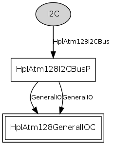

Component: tos.chips.atm128.i2c.HplAtm128I2CBusC
configuration HplAtm128I2CBusC
This driver implements direct I2C register access and a blocking master
controller for the ATmega128 via a Hardware Platform Layer (HPL) to its
two-wire-interface (TWI) hardware subsystem.
- Author:
-
Martin Turon <mturon@xbow.com>
-
Philip Levis
- Version:
-
$Id: HplAtm128I2CBusC.nc,v 1.5 2010-06-29 22:07:43 scipio Exp $
Provides
Wiring
